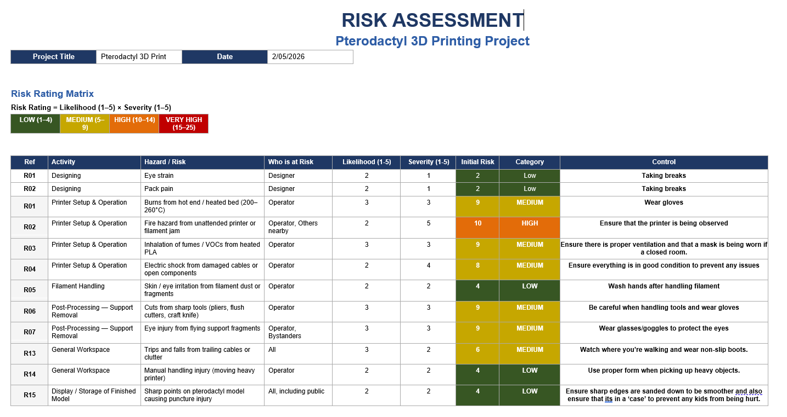
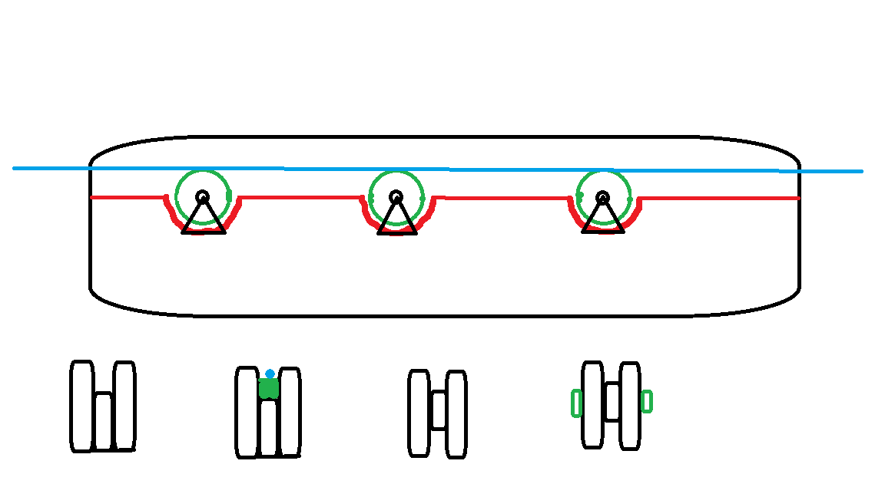
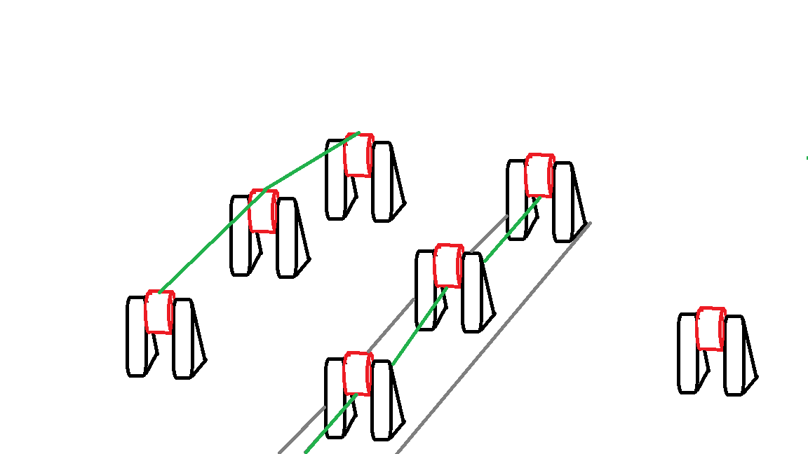
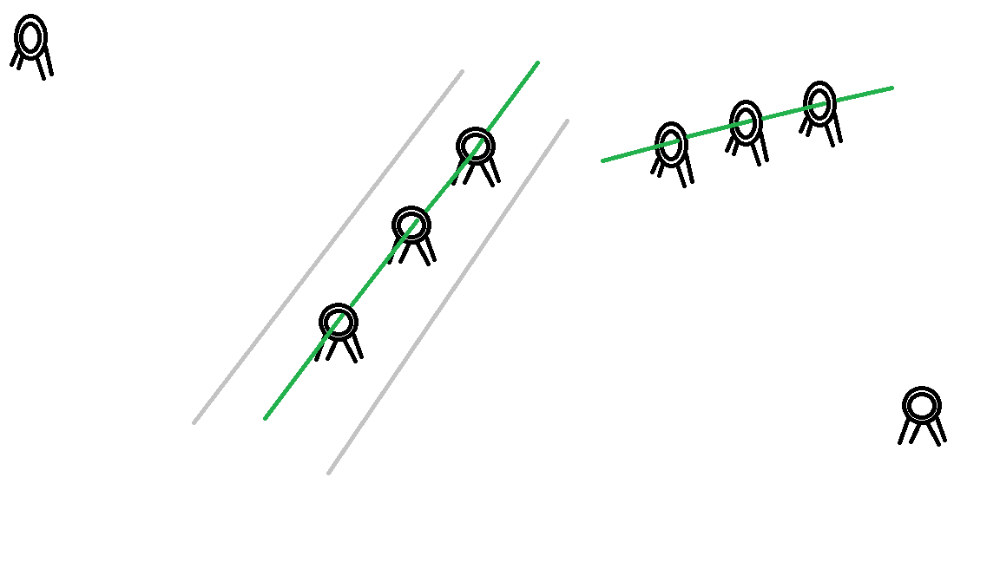

Stages
What were the stages?
The process of reaching a final result involved extensive research and development, but it also required quite a lot of work before being able to get to that point and after development.
This page will be discussing all the different stages.
Stage One - Concept/Planning
Stage one consisted of forming a concept and planning out how the group were going to delegate their roles. At this point in time it was key to create a Gantt Chart so that everyone had an understanding on the time frame they had and also so they are able to track what tasks they had so the group would be able to work cooperatavly and efficiently.
Click here for Gantt Chart
The second task that was carried out at this stage was to define goals this took about a week to do as all members had to pitch their seperate ideas to Mary (MJ), as a group they had to determine what their main goal was for the artefact.
Ideas for the project all revolved around the same idea of creating a creature of some sorts.
Options proposed were:
It was determined that the Caterpiller, Cockroach and Centipede would no longer be the ideal project. Due to their complexity with the number of legs, size, and the lack of facilities to make this possible without any motors to replicate their movement.
Similar complexities were identified amongst the Mantis and Butterfly regarding their size, however additional issues regarding their use cases and their wings. The wings became an issue because of the proportion of wing to body ratio amongst the two and the position they would be in would not be able to support the weight while also making the wings flap to be able to meet the criterias.
Finally the last two options were Pterodactyl and the Phoenix. The prehistoric bird and mythical bird had common properties that were lacking in the other options, their bodies are generally much larger allowing us to create a base or a stance that they are able to stand stationary without toppling over.
In the end, the group decided on the Pterodactyl, this is a direct result of their shared interest in dinosaurs and also the possibilites that were made available without having to worry about small features that make the bird identifiable.
Once the Pterodactyl was decided upon extensive research began, movement mechanisms to make the wings flap , the materials/facilities were researched.
Stage Two - Design
Stage two involves a continuation of the extensive research to identify the target environment, this was necessary so an appropriate risk assessment could start to be assembled so that both handlers and users would know the potential risks that they are being open to when handling either the equipment necessary to create a design or a physical copy and the users who are going to be using the product.
To view the risk assessment click the box
Initially, it was planned to use motors however due to some complications regarding budget it became an unviable option. The research paved a new path to complete the same function, this new method is to use strings where the user is able to pull a string the wings to straighten then once it gets released then the the wing starts to relax and return to its original state. This would resemble the way a wing would be able to flap allowing us to meet one of our goals.
There was a slight issue with only using a string this is because of 2 main factors being friction and entanglment. For this reason 3 different ways to implement the string into the wing were designed.



The chosen system was the Roller system, although the internal dual roller system is the optimal choice the singular set provides sufficient benefits and the only downside being the lack of ability to produce complex wing motions. Furthermore, the singular row keeps the maintainance at a minimum as there was half of the number of rollers and less things for the string to possibly slip out of and tangle which is a realistic scenario.
Stage 3 - Model Development
Stage three involves the development of the prototypes.
The 3 components of the Pterodactyl body and the base were modelled over the course of 2 weeks.
Body
Wings
Stand
Stage 4 - Printing Prototype
The fourth stage was all about printing a prototype and evaluating them.
During evaluation most parts seemed flawless with the exception of the wings, due to a slight slant it printed at different levels which made the rollers melt and flat. Additionally during the prototype stage PLA fillament was used to print the prototype because of its biodegradable properties meaning that if there were any issues it would be able to be degraded and not stuck in a landfill ensuring that we are being as environmentally friendly as possible why working with plastics.
Evidence of the joint working:
Stage 5 - Final productGet in touch
Sed varius enim lorem ullamcorper dolore aliquam aenean ornare velit lacus, ac varius enim lorem ullamcorper dolore. Proin sed aliquam facilisis ante interdum. Sed nulla amet lorem feugiat tempus aliquam.
- information@untitled.tld
- (000) 000-0000
- 1234 Somewhere Road #8254
Nashville, TN 00000-0000